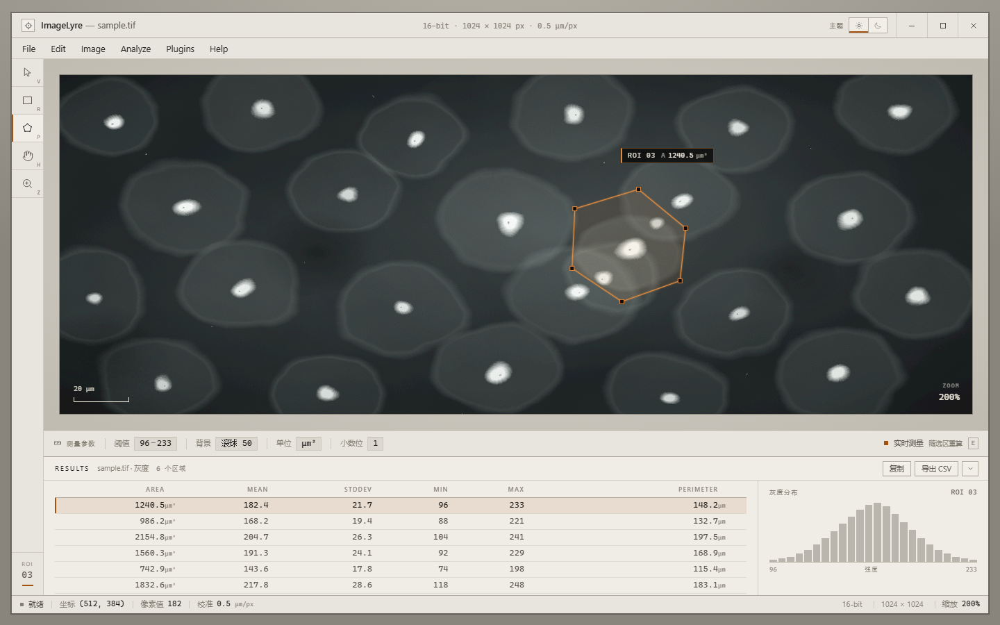
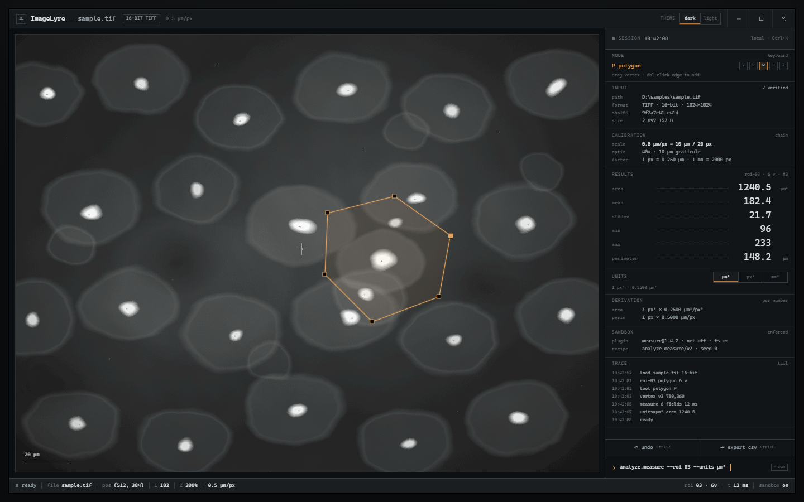
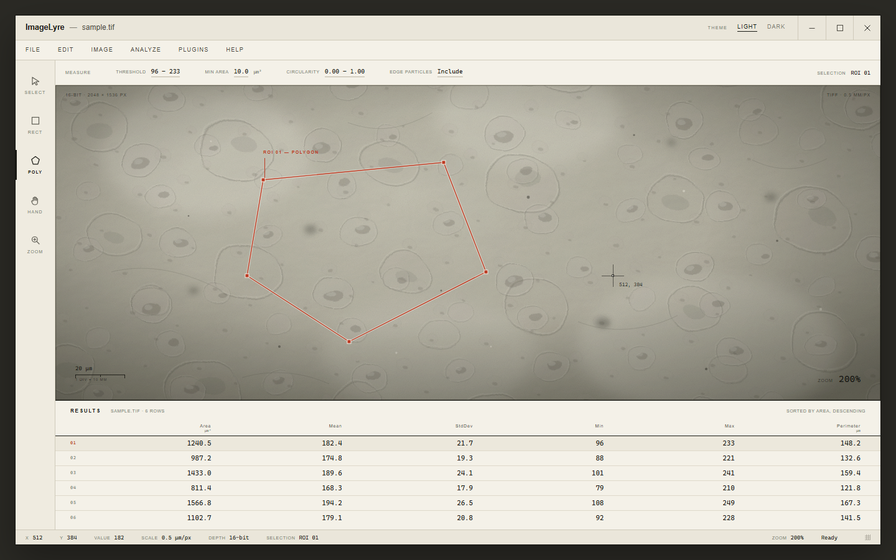
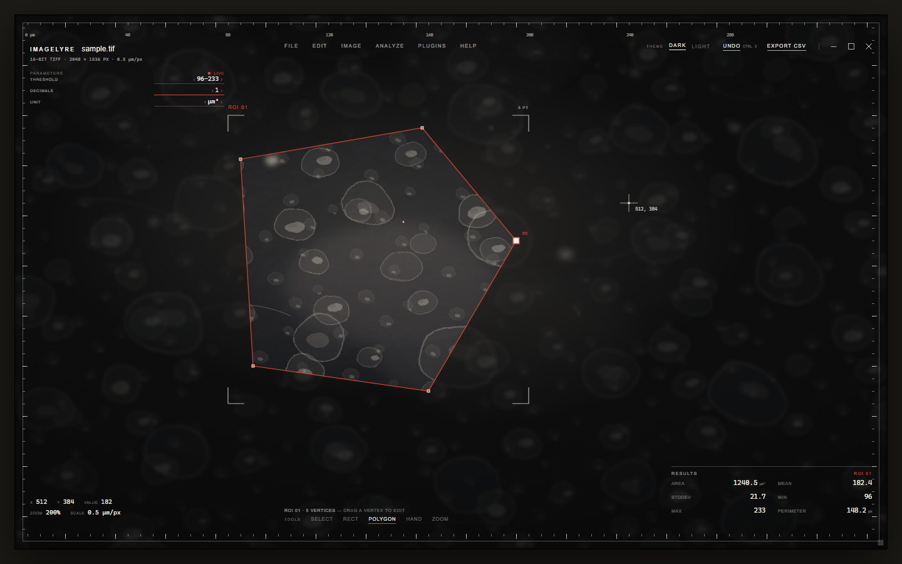
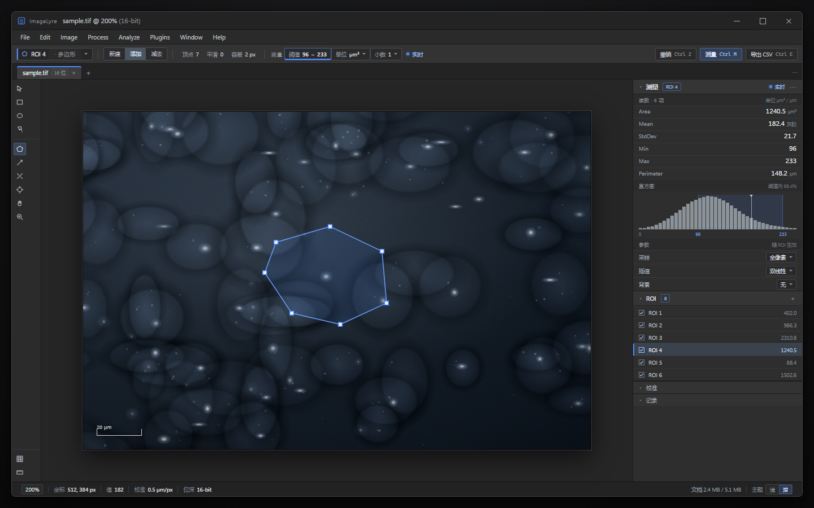
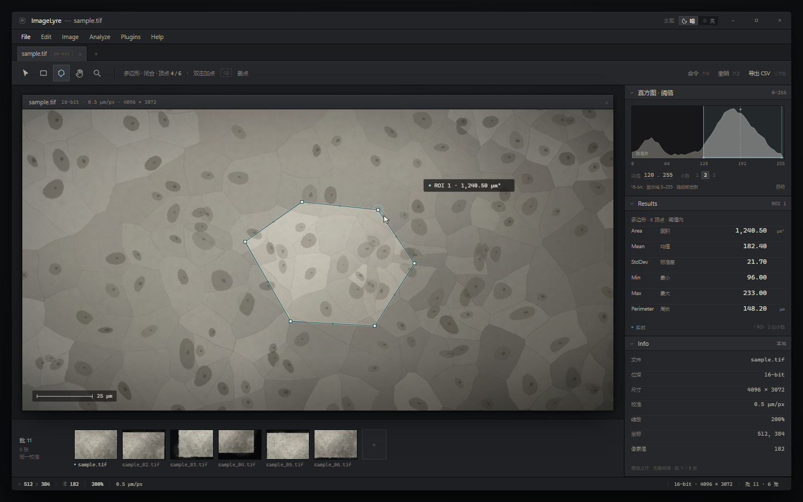
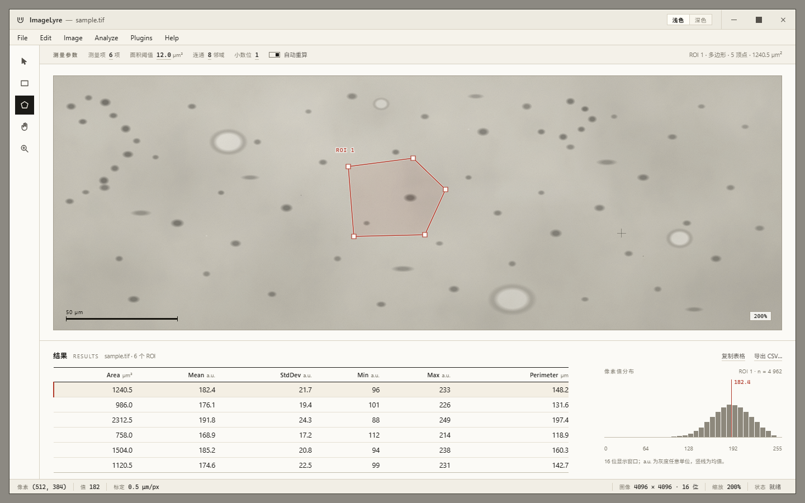
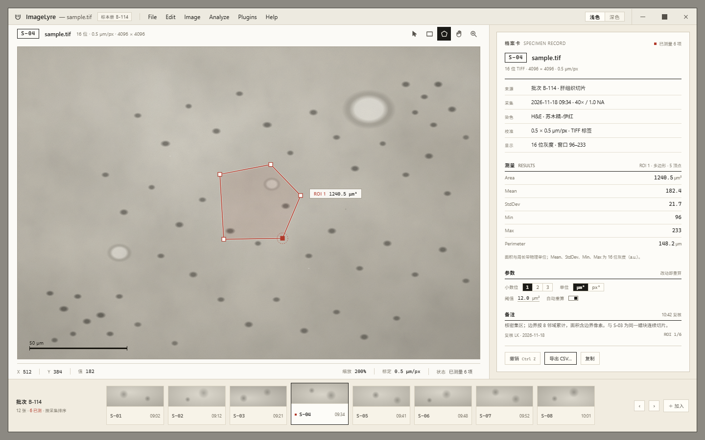
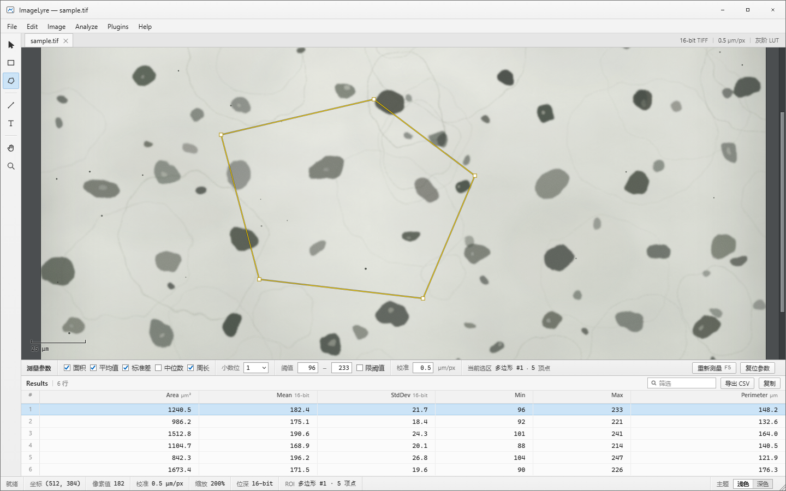
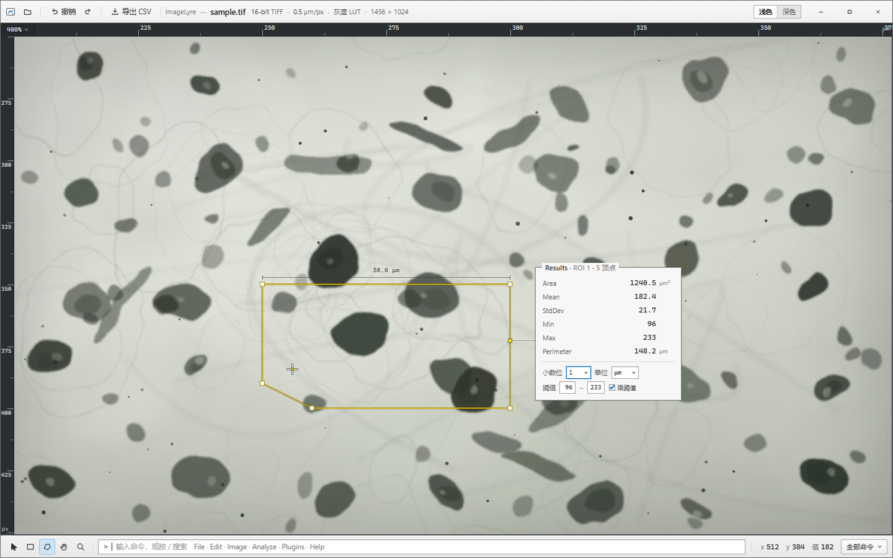

ImageLyre · design bake-off · 12 versions · 2026-11-20
六个人，三轮，十二版
第一轮同题同骨架；第二轮只给任务不给位置；第三轮换道：IT 科技（A3、F3）、Photoshop 式图像处理（C3、D3）、取景器与标本册（B3、E3）。同一个人在三轮里的变化，比十二张图并排更能说明问题。
A · 沈岚
工业设计 / 医疗仪器
信条：仪器不该喊

V1 · 自由布局
观片灯暗房观片灯，读数像刻度盘。窗口稿
V2 · 去限定
转塔工具转塔，读数拴在选区旁。窗口稿
V3 · IT 科技
台账每个数字都带出处：输入哈希、校准链、沙箱、trace。窗口稿
B · Jonas
瑞士平面 / 编辑排版
信条：网格比装饰有力

V1 · 自由布局
记录页压在观片灯上的记录纸。窗口稿
V2 · 去限定
引线顶点 P3 到 AREA 的一条朱红引线。窗口稿
V3 · 取景器
取景器整窗即取景器，四边刻度接管界面。窗口稿

V2 · 去限定
尺侧画布吃满，尺子在脚下，读数钉在形上。窗口稿
V3 · Photoshop
读数台借 Photoshop 的台面，做一台测量仪器。窗口稿

V1 · 自由布局
暗房关掉顶灯，只留一盏观片灯。窗口稿
V2 · 去限定
挂签读数像一张系着线的标本签。窗口稿
V3 · Photoshop
修图暗房直方图管阈值，胶片条管同一批样本。窗口稿
E · 阿米娜
科学可视化 / 期刊制图
信条：能进论文

V1 · 自由布局
图版显微截图按期刊图版排。窗口稿
V2 · 去限定
图版与表 1图注与表 1 第 1 行被同一条线钉住。窗口稿
V3 · 标本册
标本册图、档案卡与索引同屏。窗口稿
F · 陈默
独立开发者 / 开源工具
信条：好工具不表演

V1 · 自由布局
卡尺用惯的卡尺，每一格都在读数。窗口稿
V2 · 去限定
命令条菜单缩成脚下一行命令条。窗口稿
V3 · IT 科技
命令台六个数不是面板，是命令的输出。窗口稿
挑的时候先选「人」——你要的是仪器的可信、编辑的克制、工具的密度、暗房的光、出版的严谨，还是工匠的朴素；再选「轮」——自由布局、去掉限定，还是换道后的成熟语言。